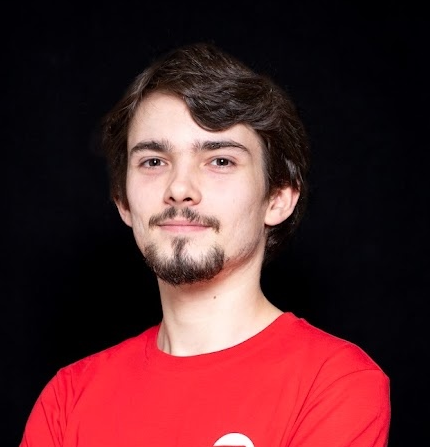

Victor Lefebvre
Rust & Embedded Open Source Engineer · Fullstack Consultant

Fullstack consultant with 5+ years shipping and maintaining production web apps — React, Vue, Svelte, Angular, NestJS. Increasingly focused on Rust and embedded / systems engineering through open source: procedural macros, parsers, no_std libraries and RP2040 firmware, backed by 25+ merged PRs (6 to Embassy) and 30k+ crate downloads.
Experience
Zenika — Consultant · Fullstack Developer · Trainer
Sep 2023 – PresentLille, France · Hybrid
Decathlon — Rent-Front
Sep 2025 – PresentFullstack · TypeScript, SvelteKit, Svelte (3/4/5), NestJS, PostgreSQL
- Led major Svelte upgrades (3 → 4 → 5) across the SvelteKit rental / second-life platform.
- Reworked stock lookups into batched API calls (~3–4× fewer requests), removing the rate-limit throttling the previous per-item approach hit.
- Owned accessibility remediation (RGAA) end-to-end, raising estimated compliance from ~50% to ~80%; resolved every issue within the team's control.
Adeo — SPA (supply-chain data aggregator)
Sep 2024 – Aug 2025Fullstack · TypeScript, NestJS, GraphQL, Cucumber
- Grew an internal PoC into a maintained product aggregating 5–7 data sources behind a single, frequently-cached GraphQL call — replacing the multiple per-client round-trips teams previously made.
- Designed field-level caching with per-source TTLs, keeping the aggregation layer configurable as data sources evolved.
Adeo — LPI (product & packaging data)
Jan 2024 – Aug 2025Fullstack · TypeScript, Vue, NestJS, PostgreSQL, Kafka, Cucumber
- Built palletization-plan ingestion from scratch and integrated BigQuery into a 250k+ record validation system with history, web UI and Kafka events.
- Coordinated a breaking schema change across every downstream team and shipped it without downtime.
Zenika — Career Path
Sep – Dec 2023Fullstack · TypeScript, React, Quarkus, Neo4j
- Acted as de-facto technical lead on the TypeScript migration and React upgrades for a 3–4 person team; drove refactoring, bug-fixing and onboarding docs.
- Login and career-path graph rendering made 2× faster.
Zenika training
2023 – PresentDelivered 6 corporate courses across React, TypeScript, Python, Docker, Linux and shell. October 2025 React session: 5 attendees · 9.25/10.
Les Fabricants — Fullstack Developer (Apprenticeship)
Sep 2020 – Aug 2023Roubaix & Croix, France · Hybrid
ONEY — HIVE (internal project-management app)
Fullstack · TypeScript, Angular, NestJS, MongoDB
- Built a Storybook component library (several dozen components) to streamline development and developer/designer review.
- Delivered features with a focus on security (ISO 27001) and performance.
Boston Scientific — eCare & eCare 2.0
Fullstack · TypeScript/JavaScript, Angular (1.3 & 16), PHP, MongoDB
- Dockerized the dev environment: onboarding cut from days to ~1 hour, and removed a costly licensed-software dependency.
- Contributed to the full AngularJS 1.3 → Angular 16 rewrite while maintaining the legacy application.
Open Source & Rust
I contribute across Rust, Go and infrastructure projects, including Embassy. Full history on my GitHub.
Selected Rust projects
- cecetype — a
no_std/ no-allocation schema and dynamic-value layer preserving Serde wire formats across generated CLIs, web UIs and test tools. - serde-versioning ★19 — drop-in replacement for serde's
Deserializederive, adding native versioning for legacy data formats. - nnn ★19 — procedural macro for newtypes with built-in validation and sanitization (inspired by nutype).
- rousseau (private) — RP2040 UART multiplexer over SSH; a custom PIO driver runs up to 8 UARTs across Pico variants.
- xprs — a fast, extensible mathematical expression parser and evaluator for Rust.
- pud — procedural macro deriving typed, composable,
no_std-friendly updates for Rust structs.
Broader OSS
3 merged PRs to CoreOS Butane (Go), a merged contribution to community.hrobot, and maintenance of an Ansible collection and public homelab infrastructure.